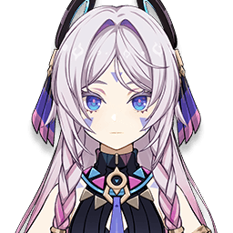
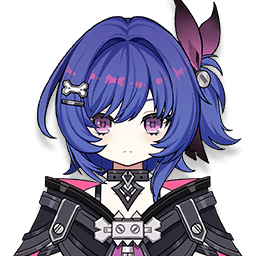

Act 1 — who to pick
Same left-to-right order as your Principal Cast row. Opposing lineup is a single enemy; Star Challenge is 75 seconds.
1
Wanderer
bench
Anemo2

Citlali
Cryo + 20% Hydro RES shred
Cryo3

Neuvillette
your carry — stay on him
Hydro4

Prune
bench
Anemo5
Kaeya
second Cryo, keeps Frozen up
Cryo6
Barbara
heals — Neuvillette scales on HP
HydroWhy these four
Citlali's Cryo + Neuvillette's Hydro → Frozen. That single reaction drives
everything below.
Frozen feeds Neuvillette. Heir to the Ancient Sea's Authority grants
up to 3 stacks, boosting his Charged Attack.
Frozen also fires Citlali's shred. Mamaloaco's Frigid Rain cuts
20% Hydro RES — aimed straight at your carry.
Kaeya is the second Cryo source, so Frozen holds through Citlali's
cooldowns instead of gapping.
Barbara keeps him topped up. Discipline of the Supreme Arbitration
gives +0.6% Hydro DMG per 1% HP above 30%, to a maximum of +30%.
Order: put Citlali or Barbara in slot 1 so you open on setup, then
swap to Neuvillette and stay there. Rough loop — Barbara skill, Kaeya skill, Citlali
skill, then Neuvillette charged attacks for the remainder.